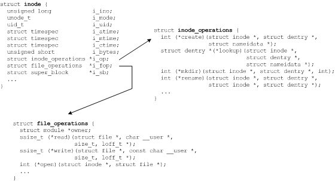

2-5 inode 结构和相关联的操作
在此我们没有讨论 Linux 中可用的具体文件系统，但是值得在这里稍微提一下。Linux 支持许多种文件系统，包括 MINIX、MS-DOS 和 ext2 等老式文件系统。Linux 还支持 ext3、JFS 和 ReiserFS 等新的日志型文件系统。另外，Linux 支持加密文件系统（比如 CFS）和虚拟文件系统（比如 /proc）。
最后一种值得注意的文件系统是 Filesystem in Userspace（FUSE）。这种文件系统可以将文件系统请求通过 VFS 发送回用户空间。所以，如果您有兴趣创建自己的文件系统，那么通过使用 FUSE 进行开发是一种不错的方法。
尽管文件系统的实现并不复杂，但它是可伸缩和可扩展的体系结构的好例子。文件系统体系结构已经发展了许多年，并成功地支持了许多不同类型的文件系统和许多目标存储设备类型。由于使用了基于插件的体系结构和多层的函数间接性，Linux 文件系统在近期的发展很值得关注。
通过上边的分析，我觉着自己还是适合在user space（即用户空间）那里做些事情。
用户空间包含一些应用程序（例如，文件系统的使用者）和 GNU C 库（glibc），它们为文件系统调用（打开、读取、写和关闭）提供用户接口。
在只涉及高级应用层方面的编程时，建议将GNU C库（glibc）当作帮助手册，明白了文件操作的过程，用到那个接口，在手册里查找即可。
其他有关linux文件管理的知识，后续我们会一一进行详细地讲解。
Linux文件系统中，通过GNU C库操作文件时，如何与内核空间的系统调用层间进行通信？